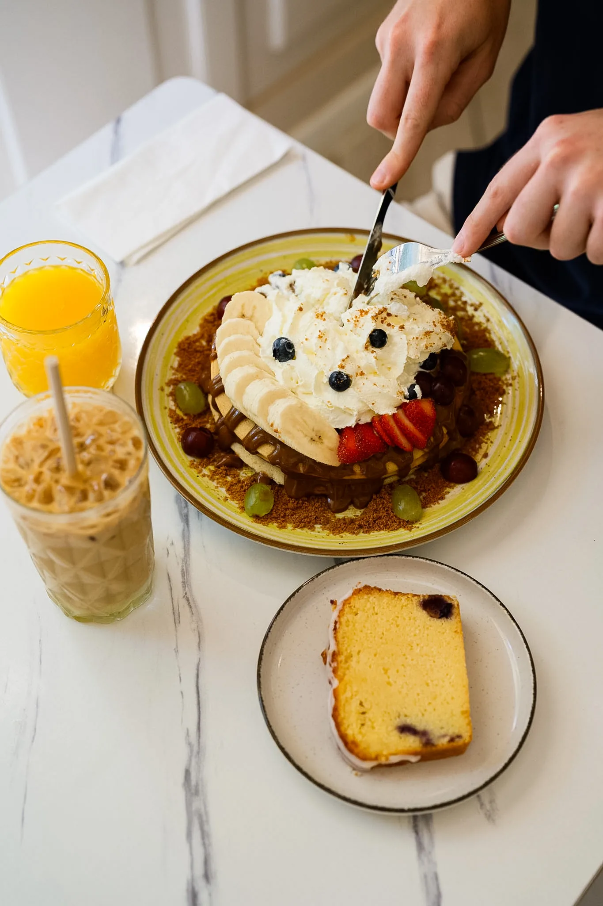
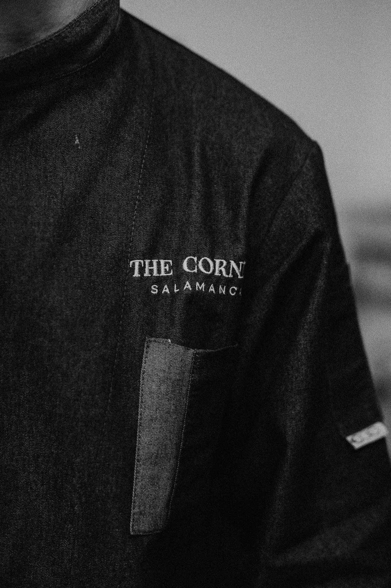
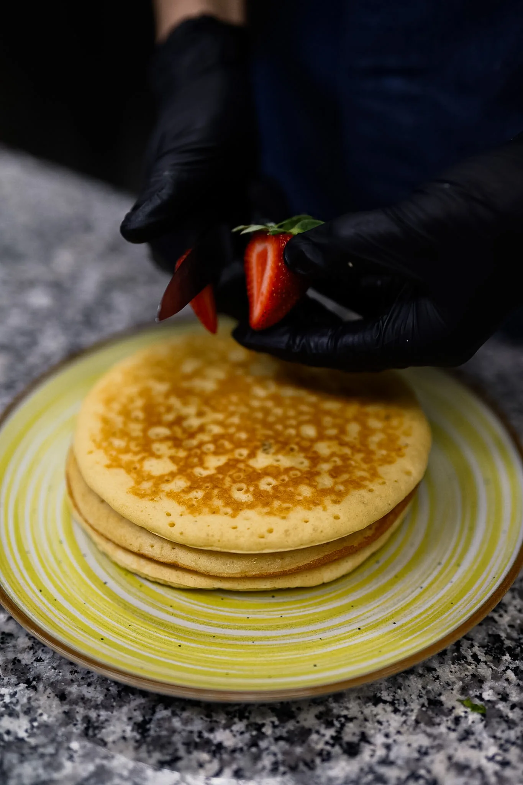
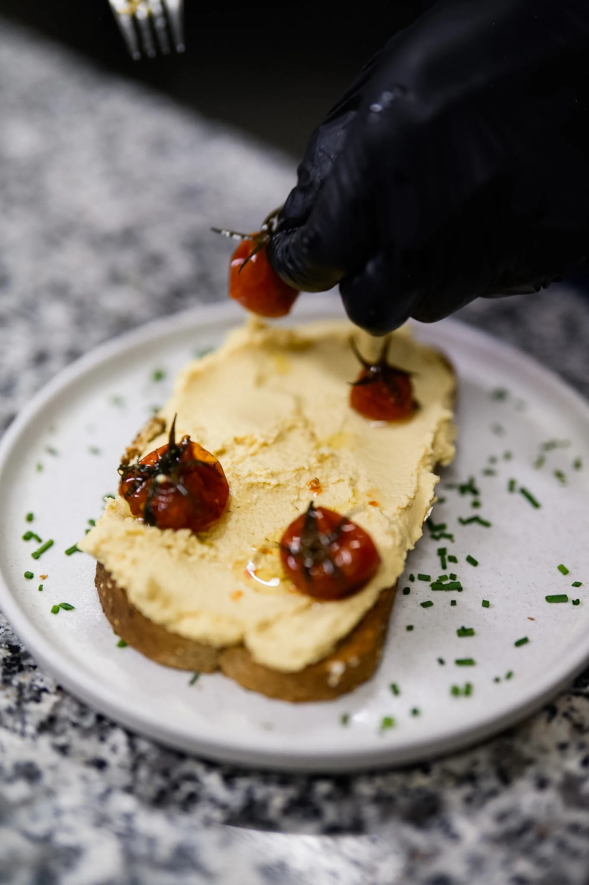
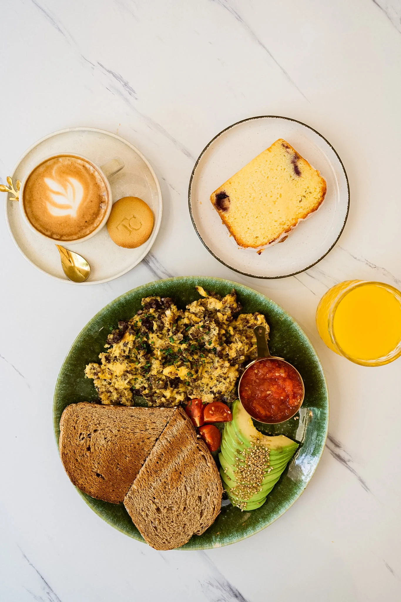
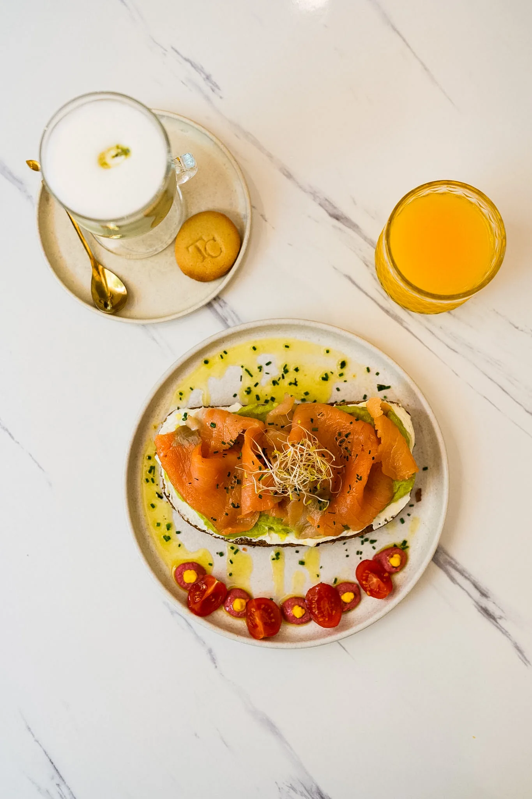
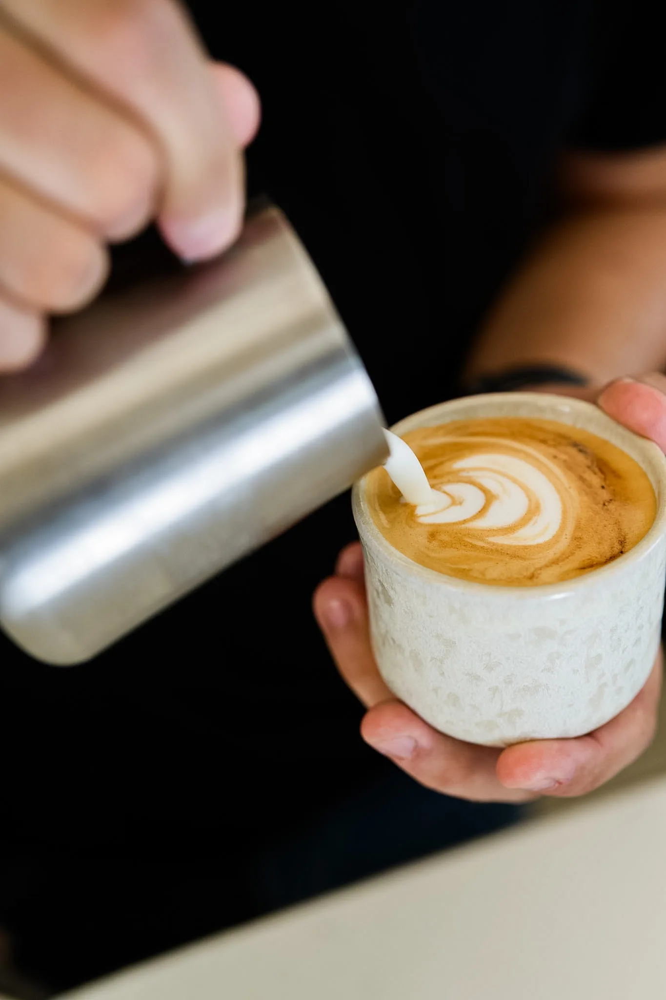
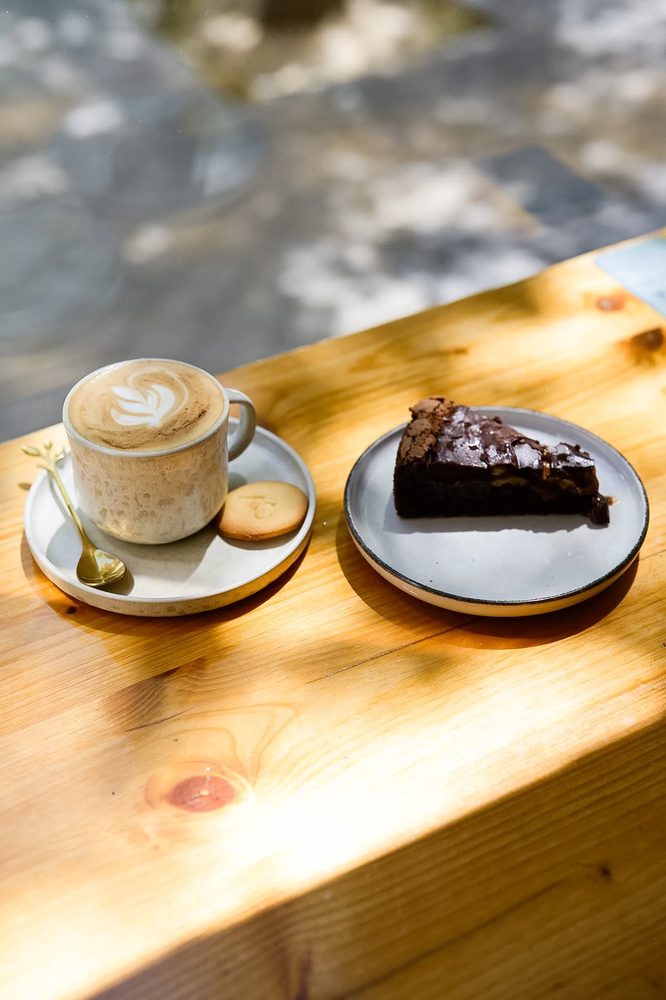
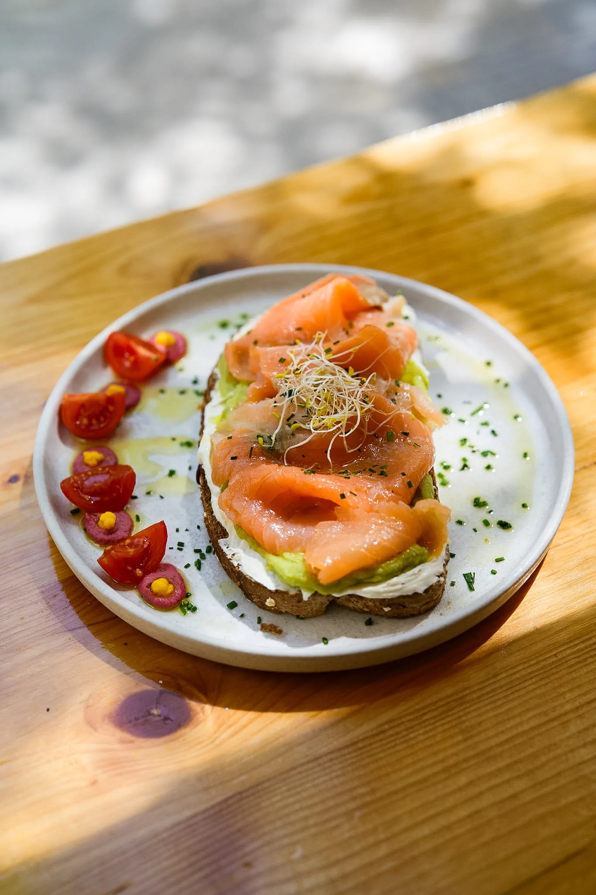
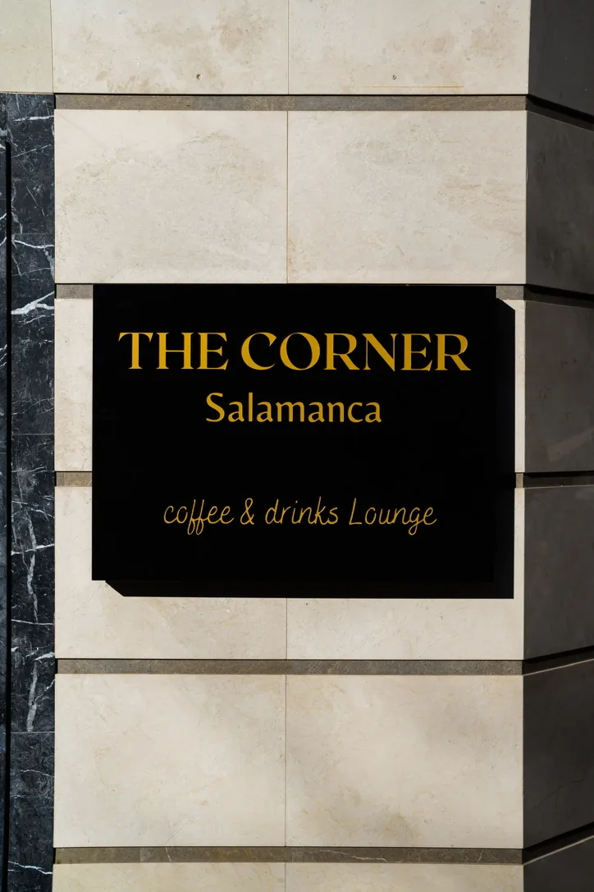

Coffee · Brunch · Drinks
The Corner Salamanca
A slower kind of morning.

01 · Our Philosophy
The pleasure of taking your time.
Fresh ingredients, thoughtful cooking and specialty coffee served with care.



02 · Brunch
The Corner
Brunch.
Eggs Benedict, pancakes, signature toasts and seasonal plates, prepared to order.



03 · Specialty Coffee
Made with attention.
From espresso to latte art, every cup is prepared with precision.

04 · Signature Toasts
Simple ingredients, beautifully composed.
Fresh sourdough, seasonal ingredients and careful presentation.


07 · Visit Us
See you at
The Corner.
Brunch, specialty coffee and drinks in Barrio de Salamanca.
Address
C. de José Ortega y Gasset, 6928006 Madrid
Hours
- Mon — Wed
- 09:00 — 20:00
- Thu — Sat
- 09:00 — 00:00
- Sunday
- 10:00 — 19:00
